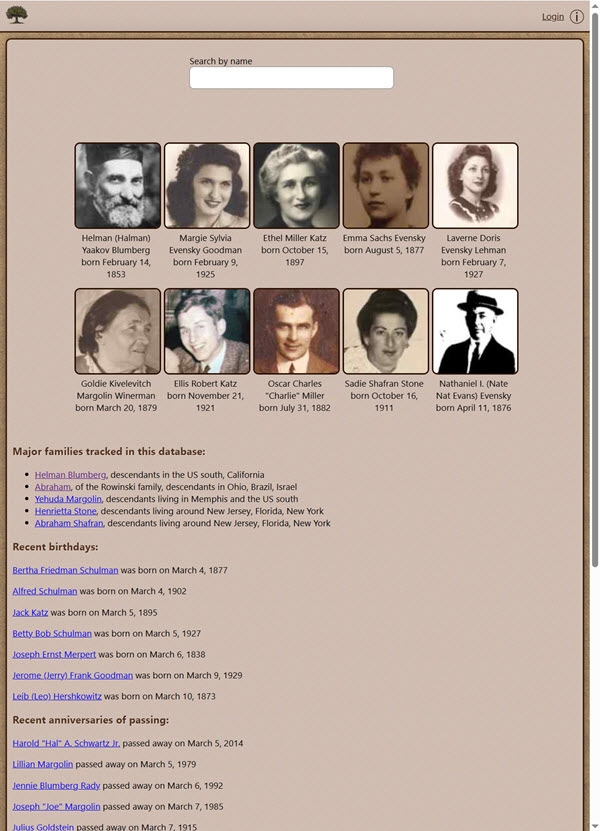
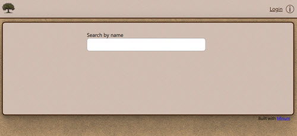
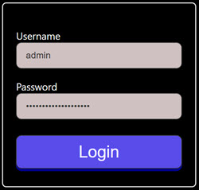
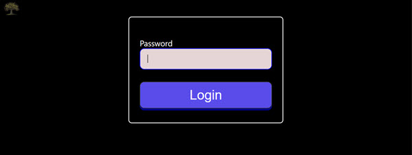

Memoria is a web application, written in Java, that provides a family-tree scrapbook capability. Users may add text, pictures and videos to profiles of persons, and link those persons together through their family relationships.
The application is designed to allow the general public to see some parts, and for those with the family password to see more. It is also possible for some users to be "administrators", which gives them the privilege to edit information. All other users, even those with the family password, are not able to make any changes to data - only administrators. It is expected there would only be a very small number of administrators, and they must be trustworthy - they have full control over data in the system.
Here is the homepage. When a user first hits the site, this is what they see. They are shown a short list of "interesting" people - those with pictures, relations to others, and text descriptions. There is a search field which allows fuzzy search by name. Users who are non-authenticated to the family password (in other words, the general public) will only see deceased individuals. Living persons' information is hidden.

If you are starting the application from the command line in the source code directory (downloaded from https://github.com/byronka/memoria_project):
$ make run
You will see logs, and then this line indicates the system is ready:
System is ready after 3704 milliseconds. Access at http://localhost:8080 or https://localhost:8443
It is now ready to access in a web browser (see http://localhost:8080/).

If you would like to build a jar, that may be done by running
make jar on the command line. The file location will be
printed in the terminal.
Starting the application is done by running make runjar
If this is the first time you are starting and there is no
memoria.config file in the same directory as the jar, and no
minum.config, complaints will be output about using
defaults.
Also, if it does not already exist, a database directory will be created at "db".
One absolutely essential directory is the template directory and the static files directory. Without these, basic functionality will be unavailable. See that the following values are configured properly: STATIC_FILES_DIRECTORY in minum.config and TEMPLATE_DIRECTORY in memoria.config
In order to add data, you will need to authenticate as an administrator. When the system first starts, an initial "admin" user is created, and their password is stored in the working directory as "admin_password"
The URL to login as an administrator does not have any links from the homepage, in order to make links to the authentication system less discoverable for automated scripts. The login page is at the "/login" endpoint.
Here is what page looks like:

In contrast, there is a login link for family members in the top right on all pages, where the user enters the shared password (set by you in the "memoria.config" configuration file). Here is what that looks like:
